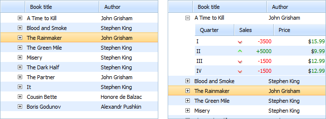

Sub-Grid
You can use collapsible sub-grid to integrate 2 dhtmlxGrids together.

To create a sub-grid for a row, you should create a column of type 'sub_row_grid' and use it as any other columns to specify the related data. dhtmlxGrid will treat data values specified in that column as URLs to the XML configuration of the sub-grids.
mygrid = new dhtmlXGridObject('gridbox'); mygrid.setColTypes("sub_row_grid,ed,ed"); ... mygrid.init(); mygrid.load('data.xml', 'xml');
In the data.xml file the user can have the following code:
//data.xml <?xml version="1.0"?> <rows> <row id="row1"> <cell> sub-grid.xml </cell> <cell> Data </cell> <cell> Data </cell> <row> ... </rows>
And in the sub-grid.xml file:
//sub-grid.xml <?xml version="1.0"?> <rows> <head> <column width="80" type="ro" align="left" sort="str">Quarter</column> <column width="80" type="dyn" align="right" sort="str">Sales</column> <column width="110" type="price" align="right" sort="str">Price</column> </head> <row id="1"> <cell>I</cell> <cell>-3500</cell> <cell>15.99</cell> </row> ... </rows>
After clicking ”+” image, the component will fetch configuration XML and build the sub-grid based on it.
As the sub-grid has different configuration, it can have a different set of columns and its style can differ from that of the main grid.
The sub-grid object can be accessed in the following way:
grid.cells(i,j).getSubGrid();
Related Events
onSubGridCreated - executed when sub-grid opened first time, and related object created ( before data loaded in subgrid ), blockable:
- subgrid object;
- row id;
- row index;
- content of the related cell.
onSubGridLoaded - executed when data loaded in subgrid:
- subgrid object;
- row id;
- row index;
- content of the related cell.
Sub grid events and sub grid customizing
There are two events in the component that allow you to customize the sub grid:
a) onSubGridCreated It is called when the sub grid object is created (triggered by sub_row opening), but before data is loaded from the related XML file. It provides the following values:
- sub grid object;
- row id;
- cell index;
- sub_row_grid cell value.
b) onSubGridLoaded This event is called when the sub grid has loaded the configuration XML and parsed its values. It provides the following values:
- sub grid object;
- row id;
- cell index;
- sub_row_grid cell value.
When you are loading data in subgrid through the 'onSubGridCreated' event, you need to call the 'onGridReconstructed' event after the loading, to force correct sizing of the master grid.
grid.attachEvent("onSubGridCreated",function(subgrid){ ... subgrid.load(data, function(){ subgrid.callEvent("onGridReconstructed",[]); ... }); })
Events can be used to change the grid behavior:
grid.attachEvent("onSubGridCreated",function(subgrid){ subgrid.enableMultiselect(true); subgrid.enableEditEvents(false,false,false); return true; // mandatory! })
Add|preselect some data after configuration was loaded:
grid.attachEvent("onSubGridLoaded",function(subgrid){ subgrid.addRow(someid,value); subgid.selectCell(someid,0); })
Events can be used to fully change the way the sub grid is loaded. E.g. the sub grid can be built manually:
grid.attachEvent("onSubGridCreated",function(subgrid){ subgrid.setHeader("A,B,C"); subgrid.setColTypes("ro,ro,ro"); subgrid.setInitWidths("100,100,100") subgrid.init(); return false; // block default behavior })
Or the sub grid can be loaded from XML string:
grid.attachEvent("onSubGridCreated",function(subgrid,id,ind,data){ subgrid.loadXMLString(data); // use the current data as configuration xml return false; // prevent default behavior })